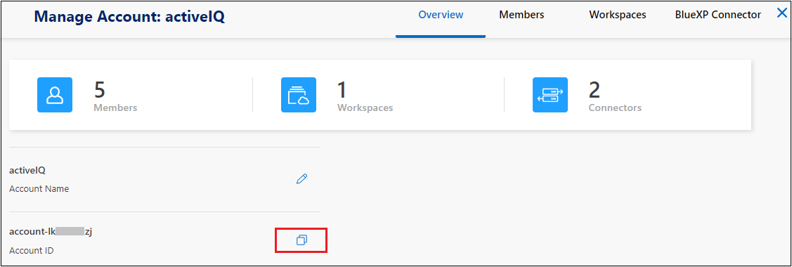

릴리스 정보
릴리스 정보
인터넷에 액세스할 수 있는 호스트에 BlueXP 분류를 설치합니다
 변경 제안
변경 제안
네트워크의 Linux 호스트 또는 인터넷 액세스가 가능한 클라우드의 Linux 호스트에 BlueXP 분류를 설치하려면 몇 가지 단계를 완료하십시오. 이 설치의 일부로 네트워크 또는 클라우드에 Linux 호스트를 수동으로 배포해야 합니다.
온프레미스에도 위치한 BlueXP 분류 인스턴스를 사용하여 온프레미스 ONTAP 시스템을 스캔하려는 경우 온프레미스 설치가 좋은 옵션이 될 수 있지만, 이는 필수 사항이 아닙니다. 선택한 설치 방법에 관계없이 소프트웨어가 정확히 같은 방식으로 작동합니다.
BlueXP 분류 설치 스크립트는 시스템 및 환경이 필수 전제 조건을 충족하는지 확인하는 것으로 시작됩니다. 필수 구성 요소가 모두 충족되면 설치가 시작됩니다. BlueXP 분류 설치를 실행하는 것과 별도로 필수 구성 요소를 확인하려면 필수 구성 요소에 대한 테스트만 다운로드할 수 있는 별도의 소프트웨어 패키지가 있습니다. "Linux 호스트가 BlueXP 분류를 설치할 준비가 되었는지 확인하는 방법을 참조하십시오".
Linux 호스트 _ 의 일반적인 설치 방법은 다음과 같습니다.

클라우드의 Linux 호스트에 _ 을(를) 설치하는 일반적인 구성 요소와 연결은 다음과 같습니다.

페타바이트 단위의 데이터를 스캐닝할 대규모 구성의 경우 여러 호스트를 포함하여 추가적인 처리 성능을 제공할 수 있습니다. 여러 호스트 시스템을 사용하는 경우 주 시스템을 _Manager node_라고 하며 추가 처리 능력을 제공하는 추가 시스템을 _Scanner nodes_라고 합니다.
참고: 또한 이 기능을 사용할 수 있습니다 "인터넷에 액세스할 수 없는 사내 사이트에 BlueXP 분류를 설치합니다" 완전히 안전한 사이트를 위한 것입니다.
빠른 시작
다음 단계를 따라 빠르게 시작하거나 나머지 섹션을 아래로 스크롤하여 자세한 내용을 확인하십시오.
 커넥터를 작성합니다
커넥터를 작성합니다커넥터가 없는 경우 "Connector를 온-프레미스에 배포합니다" 네트워크의 Linux 호스트 또는 클라우드의 Linux 호스트
또한 클라우드 공급자와 커넥터를 생성할 수도 있습니다. 을 참조하십시오 "AWS에서 커넥터 생성", "Azure에서 커넥터 만들기", 또는 "GCP에서 커넥터를 생성하는 중입니다".
 사전 요구 사항을 검토합니다
사전 요구 사항을 검토합니다환경이 필수 조건을 충족할 수 있는지 확인합니다. 여기에는 인스턴스에 대한 아웃바운드 인터넷 액세스, 포트 443을 통한 커넥터와 BlueXP 분류 간의 연결 등이 포함됩니다. 전체 목록을 참조하십시오.
또한 을 충족하는 Linux 시스템도 필요합니다 따르는 요구사항.
 BlueXP 분류를 다운로드하고 배포합니다
BlueXP 분류를 다운로드하고 배포합니다NetApp Support 사이트에서 클라우드 BlueXP 분류 소프트웨어를 다운로드하고 사용할 Linux 호스트에 설치 프로그램 파일을 복사합니다. 그런 다음 설치 마법사를 시작하고 화면의 지시에 따라 BlueXP 분류 인스턴스를 배포합니다.
 BlueXP 분류 서비스에 가입합니다
BlueXP 분류 서비스에 가입합니다BlueXP의 BlueXP 분류 검사에서 처음 1TB의 데이터는 30일 동안 무료로 제공됩니다. 해당 시점 이후에도 데이터를 계속 스캔하려면 클라우드 공급자 마켓플레이스 또는 NetApp의 BYOL 라이센스를 구입해야 합니다.
커넥터를 작성합니다
BlueXP 분류를 설치하고 사용하려면 먼저 BlueXP 커넥터가 필요합니다. 대부분의 경우 대부분의 경우 BlueXP 분류를 활성화하기 전에 커넥터가 설정되어 있을 수 있습니다 "BlueXP 기능을 사용하려면 커넥터가 필요합니다"하지만 지금 설정해야 하는 경우도 있습니다.
클라우드 공급자 환경에 하나를 생성하려면 를 참조하십시오 "AWS에서 커넥터 생성", "Azure에서 커넥터 만들기", 또는 "GCP에서 커넥터를 생성하는 중입니다".
특정 클라우드 공급자에 배포된 Connector를 사용해야 하는 몇 가지 시나리오가 있습니다.
-
AWS의 Cloud Volumes ONTAP, ONTAP용 Amazon FSx 또는 AWS S3 버킷에서 데이터를 스캔할 때는 AWS의 커넥터를 사용합니다.
-
Azure 또는 Azure NetApp Files의 Cloud Volumes ONTAP에서 데이터를 스캔할 때 Azure의 커넥터를 사용합니다.
Azure NetApp Files의 경우 스캔하려는 볼륨과 동일한 영역에 배포해야 합니다.
-
GCP의 Cloud Volumes ONTAP에서 데이터를 스캔할 때 GCP의 커넥터를 사용합니다.
온프레미스 ONTAP 시스템, NetApp이 아닌 파일 공유, 일반 S3 오브젝트 스토리지, 데이터베이스, OneDrive 폴더, SharePoint 계정, Google Drive 계정은 이러한 클라우드 커넥터를 사용하여 스캔할 수 있습니다.
참고: 또한 이 기능을 사용할 수 있습니다 "Connector를 온-프레미스에 배포합니다" 네트워크의 Linux 호스트 또는 클라우드의 Linux 호스트 BlueXP 분류를 사내에서 설치하려는 일부 사용자는 Connector를 내부에 설치할 수도 있습니다.
보시다시피 을 사용해야 하는 몇 가지 상황이 있을 수 있습니다 "다중 커넥터".
BlueXP 분류를 설치할 때 커넥터 시스템의 IP 주소 또는 호스트 이름이 필요합니다. 이 정보는 구내에 Connector를 설치한 경우 확인할 수 있습니다. Connector가 클라우드에 배포된 경우 BlueXP 콘솔에서 이 정보를 찾을 수 있습니다. 도움말 아이콘을 클릭하고 * 지원 * 을 선택한 다음 * BlueXP 커넥터 * 를 클릭합니다.
Linux 호스트 시스템을 준비합니다
BlueXP 분류 소프트웨어는 특정 운영 체제 요구 사항, RAM 요구 사항, 소프트웨어 요구 사항 등을 충족하는 호스트에서 실행해야 합니다. Linux 호스트는 네트워크 또는 클라우드에 있을 수 있습니다.
BlueXP 분류를 계속 실행할 수 있는지 확인합니다. 데이터를 지속적으로 스캔하려면 BlueXP 분류 장비가 켜져 있어야 합니다.
-
BlueXP 분류는 다른 애플리케이션과 공유되는 호스트에서는 지원되지 않습니다. 호스트는 전용 호스트여야 합니다.
-
구내 호스트 시스템을 구축할 때 BlueXP 분류 검사를 수행할 데이터 세트의 크기에 따라 세 가지 시스템 크기 중에서 선택할 수 있습니다.
시스템 크기 CPU RAM(스왑 메모리는 비활성화 상태여야 함) 디스크 * 초대형 *
32개의 CPU
128GB RAM
/, 또는 의 1TiB SSD
/opt에서 -100GiB를 사용할 수 있습니다
-895GiB는 /var/lib/docker에서 사용할 수 있습니다
/tmp에 -5GiB입니다* 대형 *
CPU 16개
64GB RAM
500GiB SSD 켜짐/또는
/opt에서 -100GiB를 사용할 수 있습니다
/var/lib/docker에서 사용 가능한 395GiB
/tmp에 -5GiB입니다* 중간 *
CPU 8개
32GB RAM
200GiB SSD 켜짐/또는
/opt에서 -50GiB를 사용할 수 있습니다
/var/lib/docker에서 -145GiB를 사용할 수 있습니다
/tmp에 -5GiB입니다* 소형 *
CPU 8개
16GB RAM
또는 에서 100GiB SSD
/opt에서 -50GiB를 사용할 수 있습니다
/var/lib/docker에서 -45GiB를 사용할 수 있습니다
/tmp에 -5GiB입니다소형 시스템을 사용할 때는 제한이 있습니다. 을 참조하십시오 "더 작은 인스턴스 유형 사용" 를 참조하십시오.
-
BlueXP 분류 설치를 위해 클라우드에 컴퓨팅 인스턴스를 배포할 때는 위의 "대규모" 시스템 요구 사항을 충족하는 시스템을 권장합니다.
-
* AWS EC2 인스턴스 유형 *: "m6i.4xLarge"를 권장합니다. "추가 AWS 인스턴스 유형을 참조하십시오".
-
* Azure VM size *: "Standard_D16s_v3"을 권장합니다. "추가 Azure 인스턴스 유형을 참조하십시오".
-
* GCP 시스템 유형 *: "n2-standard-16"을 권장합니다. "추가 GCP 인스턴스 유형을 참조하십시오".
-
-
UNIX 폴더 권한 *: 다음과 같은 최소 UNIX 권한이 필요합니다.
폴더 최소 권한 /tmp
rwxrwxrwt/opt
rwxr-xr-x/var/lib/docker입니다
rwx------/usr/lib/systemd/system입니다
rwxr-xr-x -
* 운영 체제 *:
-
다음 운영 체제에서는 Docker 컨테이너 엔진을 사용해야 합니다.
-
Red Hat Enterprise Linux 버전 7.8 및 7.9
-
CentOS 버전 7.8 및 7.9
-
Ubuntu 22.04(BlueXP 분류 버전 1.23 이상 필요)
-
-
다음 운영 체제에는 Podman 컨테이너 엔진을 사용해야 하며 BlueXP 분류 버전 1.26 이상이 필요합니다.
-
Red Hat Enterprise Linux 버전 9.0, 9.1 및 9.2
RHEL 9.x를 사용하는 경우 다음 기능은 현재 지원되지 않습니다.
-
어두운 장소에 설치
-
분산 스캔, 마스터 스캐너 노드 및 원격 스캐너 노드 사용
-
-
-
-
* Red Hat 서브스크립션 관리 *: 호스트는 Red Hat 서브스크립션 관리 에 등록되어 있어야 합니다. 등록되지 않은 경우 설치 중에 시스템에서 필요한 타사 소프트웨어를 업데이트하기 위해 리포지토리에 액세스할 수 없습니다.
-
* 추가 소프트웨어 *: BlueXP 분류를 설치하기 전에 호스트에 다음 소프트웨어를 설치해야 합니다.
-
사용 중인 OS에 따라 컨테이너 엔진 중 하나를 설치해야 합니다.
-
Docker Engine 버전 19.3.1 이상 "설치 지침을 봅니다".
"이 비디오 시청" CentOS에 Docker를 설치하는 빠른 데모를 보려면
-
Podman 버전 4 이상 Podman을 설치하려면 시스템 패키지를 업데이트하십시오 (
sudo yum update -y)를 클릭한 다음 Podman을 설치합니다 (sudo yum install podman -y)를 클릭합니다.
-
-
Python 버전 3.6 이상. "설치 지침을 봅니다".
-
-
* NTP 고려 사항 *: NetApp에서는 NTP(네트워크 시간 프로토콜) 서비스를 사용하도록 BlueXP 분류 시스템을 구성할 것을 권장합니다. BlueXP 분류 시스템과 BlueXP Connector 시스템 간에 시간을 동기화해야 합니다.
-
* Firewalld 고려 사항 *: 사용하려는 경우
firewalld`BlueXP 분류를 설치하기 전에 활성화하는 것이 좋습니다. 다음 명령을 실행하여 구성합니다 `firewalld따라서 BlueXP 분류와 호환됩니다.firewall-cmd --permanent --add-service=http firewall-cmd --permanent --add-service=https firewall-cmd --permanent --add-port=80/tcp firewall-cmd --permanent --add-port=8080/tcp firewall-cmd --permanent --add-port=443/tcp firewall-cmd --reload
추가 BlueXP 분류 호스트를 스캐너 노드로 사용할 계획이라면 이 규칙을 주 시스템에 추가하십시오.
firewall-cmd --permanent --add-port=2377/tcp firewall-cmd --permanent --add-port=7946/udp firewall-cmd --permanent --add-port=7946/tcp firewall-cmd --permanent --add-port=4789/udp
Docker 또는 Podman을 활성화 또는 업데이트할 때마다 다시 시작해야 합니다
firewalld설정.

|
설치 후 BlueXP 분류 호스트 시스템의 IP 주소를 변경할 수 없습니다. |
BlueXP 분류에서 아웃바운드 인터넷 액세스를 활성화합니다
BlueXP 분류에는 아웃바운드 인터넷 액세스가 필요합니다. 가상 또는 물리적 네트워크에서 인터넷 액세스에 프록시 서버를 사용하는 경우 BlueXP 분류 인스턴스에 다음 엔드포인트에 연결할 수 있는 아웃바운드 인터넷 액세스 권한이 있는지 확인합니다.
| 엔드포인트 | 목적 |
|---|---|
https://api.bluexp.netapp.com 으로 문의하십시오 |
NetApp 계정을 포함한 BlueXP 서비스와 통신합니다. |
https://netapp-cloud-account.auth0.com https://auth0.com 으로 문의하십시오 |
BlueXP 웹 사이트와 통신하여 중앙 집중식 사용자 인증. |
소프트웨어 이미지, 매니페스트, 템플릿에 액세스하고 로그 및 메트릭을 보낼 수 있습니다. |
|
NetApp에서 감사 레코드의 데이터를 스트리밍할 수 있습니다. |
|
https://github.com/docker https://download.docker.com 으로 문의하십시오 |
Docker 설치를 위한 사전 필수 패키지를 제공합니다. |
http://mirror.centos.org http://mirrorlist.centos.org http://mirror.centos.org/centos/7/extras/x86_64/Packages/container-selinux-2.107-3.el7.noarch.rpm 를 참조하십시오 |
CentOS 설치를 위한 필수 패키지를 제공합니다. |
http://packages.ubuntu.com/ |
Ubuntu 설치를 위한 필수 패키지를 제공합니다. |
필요한 모든 포트가 활성화되어 있는지 확인합니다
커넥터, BlueXP 분류, Active Directory 및 데이터 소스 간의 통신에 필요한 모든 포트가 열려 있는지 확인해야 합니다.
| 연결 유형 | 포트 | 설명 |
|---|---|---|
커넥터 <>BlueXP 분류 |
8080(TCP), 443(TCP) 및 80 |
Connector의 방화벽 또는 라우팅 규칙은 포트 443을 통해 BlueXP 분류 인스턴스 간에 인바운드 및 아웃바운드 트래픽을 허용해야 합니다. 포트 8080이 열려 있는지 확인하여 BlueXP에서 설치 진행률을 확인합니다. |
커넥터 <>ONTAP 클러스터(NAS) |
443(TCP) |
BlueXP는 HTTPS를 사용하여 ONTAP 클러스터를 검색합니다. 사용자 지정 방화벽 정책을 사용하는 경우 다음 요구 사항을 충족해야 합니다.
|
BlueXP 분류<>ONTAP 클러스터 |
|
BlueXP 분류에는 각 Cloud Volumes ONTAP 서브넷 또는 온프레미스 ONTAP 시스템에 대한 네트워크 연결이 필요합니다. Cloud Volumes ONTAP의 방화벽 또는 라우팅 규칙은 BlueXP 분류 인스턴스에서 인바운드 연결을 허용해야 합니다. 이러한 포트가 BlueXP 분류 인스턴스에 열려 있는지 확인합니다.
NFS 볼륨 내보내기 정책은 BlueXP 분류 인스턴스에서 액세스를 허용해야 합니다. |
BlueXP 분류<>Active Directory |
389(TCP 및 UDP), 636(TCP), 3268(TCP) 및 3269(TCP) |
회사의 사용자에 대해 Active Directory가 이미 설정되어 있어야 합니다. 또한 BlueXP 분류에는 CIFS 볼륨을 스캔하기 위해 Active Directory 자격 증명이 필요합니다. Active Directory에 대한 정보가 있어야 합니다.
|
여러 BlueXP 분류 호스트를 사용하여 데이터 소스를 검사하는 추가 처리 기능을 제공하는 경우 추가 포트/프로토콜을 활성화해야 합니다. "추가 포트 요구 사항을 참조하십시오".
Linux 호스트에 BlueXP 분류를 설치합니다
일반적인 구성의 경우 단일 호스트 시스템에 소프트웨어를 설치합니다. 여기에서 해당 단계를 확인하십시오.

페타바이트 단위의 데이터를 스캐닝할 대규모 구성의 경우 여러 호스트를 포함하여 추가적인 처리 성능을 제공할 수 있습니다. 여기에서 해당 단계를 확인하십시오.

을 참조하십시오 Linux 호스트 시스템 준비 및 사전 요구 사항 검토 BlueXP 분류를 배포하기 전에 필요한 전체 목록을 확인하십시오.
인스턴스가 인터넷에 연결되어 있는 경우 BlueXP 분류 소프트웨어로의 업그레이드가 자동화됩니다.
|
|
BlueXP 분류는 소프트웨어가 사내에 설치된 경우 현재 ONTAP용 S3 버킷, Azure NetApp Files 또는 FSx를 스캔할 수 없습니다. 이러한 경우 클라우드 및 에 별도의 Connector 및 BlueXP 분류 인스턴스를 배포해야 합니다 "커넥터 사이를 전환합니다" 다양한 데이터 소스에 대해 |
일반 구성을 위한 단일 호스트 설치
단일 온-프레미스 호스트에 BlueXP 분류 소프트웨어를 설치할 때 요구 사항을 검토하고 다음 단계를 따르십시오.
"이 비디오 시청" BlueXP 분류 설치 방법을 확인합니다.
모든 설치 작업은 BlueXP 분류를 설치할 때 기록됩니다. 설치 중에 문제가 발생하면 설치 감사 로그의 내용을 볼 수 있습니다. 에 기록됩니다 /opt/netapp/install_logs/. "자세한 내용은 여기에서 확인하십시오.".
-
Linux 시스템이 를 충족하는지 확인합니다 호스트 요구 사항.
-
시스템에 2개의 필수 소프트웨어 패키지(Docker Engine 또는 Podman 및 Python 3)가 설치되어 있는지 확인합니다.
-
Linux 시스템에 대한 루트 권한이 있는지 확인합니다.
-
인터넷 액세스에 프록시를 사용하는 경우:
-
프록시 서버 정보(IP 주소 또는 호스트 이름, 연결 포트, 연결 스키마: https 또는 http, 사용자 이름 및 암호)가 필요합니다.
-
프록시가 TLS 가로채기를 수행하는 경우 TLS CA 인증서가 저장된 BlueXP 분류 Linux 시스템의 경로를 알아야 합니다.
-
프록시는 투명하지 않아야 합니다. 현재 투명 프록시를 지원하지 않습니다.
-
사용자는 로컬 사용자여야 합니다. 도메인 사용자는 지원되지 않습니다.
-
-
오프라인 환경이 필요한 를 충족하는지 확인합니다 사용 권한 및 연결.
-
에서 BlueXP 분류 소프트웨어를 다운로드합니다 "NetApp Support 사이트". 선택해야 하는 파일의 이름은 * DATASENSE-INinstaller-<version>.tar.gz * 입니다.
-
설치 프로그램 파일을 사용하려는 Linux 호스트에 복사합니다(scp 또는 다른 방법 사용).
-
호스트 시스템에서 설치 프로그램 파일의 압축을 풉니다. 예를 들면 다음과 같습니다.
tar -xzf DATASENSE-INSTALLER-V1.25.0.tar.gz -
BlueXP에서 * 거버넌스 > 분류 * 를 선택합니다.
-
Activate Data Sense * 를 클릭합니다.

-
클라우드에서 준비한 인스턴스 또는 사내에서 준비한 인스턴스에 BlueXP 분류를 설치할 것인지 여부에 따라 해당 * deploy * 버튼을 클릭하여 BlueXP 분류 설치를 시작합니다.

-
Deploy Data Sense on Premises_대화 상자가 표시됩니다. 제공된 명령을 복사합니다(예:
sudo ./install.sh -a 12345 -c 27AG75 -t 2198qq)를 사용하여 텍스트 파일에 붙여 넣어 나중에 사용할 수 있습니다. 그런 다음 * 닫기 * 를 클릭하여 대화 상자를 닫습니다. -
호스트 시스템에서 복사한 명령을 입력한 다음 일련의 프롬프트를 따르거나 필요한 모든 매개 변수를 명령줄 인수로 포함하여 전체 명령을 제공할 수 있습니다.
설치 프로그램은 사전 검사를 수행하여 시스템 및 네트워킹 요구 사항이 제대로 설치되어 있는지 확인합니다. "이 비디오 시청" 사전 점검 메시지 및 의미를 이해합니다.
프롬프트가 나타나면 매개 변수를 입력합니다. 전체 명령 입력: -
7단계에서 복사한 명령을 붙여 넣습니다.
sudo ./install.sh -a <account_id> -c <client_id> -t <user_token>구내에 설치하지 않고 클라우드 인스턴스에 설치하는 경우 를 추가합니다
--manual-cloud-install <cloud_provider>. -
BlueXP 분류 호스트 시스템의 IP 주소 또는 호스트 이름을 입력하여 Connector 시스템에서 액세스할 수 있도록 합니다.
-
BlueXP 커넥터 호스트 시스템의 IP 주소 또는 호스트 이름을 입력하여 BlueXP 분류 시스템에서 액세스할 수 있습니다.
-
메시지가 나타나면 프록시 세부 정보를 입력합니다. BlueXP Connector가 이미 프록시를 사용하고 있는 경우 BlueXP 분류가 자동으로 Connector에서 사용하는 프록시를 사용하기 때문에 이 정보를 다시 입력할 필요가 없습니다.
또는 필요한 호스트 및 프록시 매개 변수를 제공하여 전체 명령을 미리 생성할 수도 있습니다.
sudo ./install.sh -a <account_id> -c <client_id> -t <user_token> --host <ds_host> --manager-host <cm_host> --manual-cloud-install <cloud_provider> --proxy-host <proxy_host> --proxy-port <proxy_port> --proxy-scheme <proxy_scheme> --proxy-user <proxy_user> --proxy-password <proxy_password> --cacert-folder-path <ca_cert_dir>변수 값:
-
ACCOUNT_ID= NetApp 계정 ID입니다
-
client_id=커넥터 클라이언트 ID(클라이언트 ID에 접미어 "clients"가 없으면 추가)
-
USER_TOKEN= JWT 사용자 액세스 토큰
-
DS_HOST= BlueXP 분류 Linux 시스템의 IP 주소 또는 호스트 이름입니다.
-
cm_host= BlueXP 커넥터 시스템의 IP 주소 또는 호스트 이름입니다.
-
cloud_provider= 클라우드 인스턴스에 설치할 때 클라우드 공급자에 따라 "AWS", "Azure" 또는 "GCP"를 입력하십시오.
-
proxy_host= 호스트가 프록시 서버 뒤에 있는 경우 프록시 서버의 IP 또는 호스트 이름입니다.
-
proxy_port= 프록시 서버에 연결할 포트(기본값 80).
-
proxy_scheme= 연결 체계: https 또는 http(기본값 http).
-
proxy_user= 기본 인증이 필요한 경우 프록시 서버에 연결할 인증된 사용자입니다. 사용자는 로컬 사용자여야 합니다. - 도메인 사용자는 지원되지 않습니다.
-
proxy_password=지정한 사용자 이름의 암호입니다.
-
ca_cert_dir=추가 TLS CA 인증서 번들을 포함하는 BlueXP 분류 Linux 시스템의 경로입니다. 프록시가 TLS 가로채기를 수행하는 경우에만 필요합니다.
-
BlueXP 분류 설치 프로그램은 패키지를 설치하고, 설치를 등록하고, BlueXP 분류를 설치합니다. 설치는 10분에서 20분 정도 걸릴 수 있습니다.
호스트 시스템과 커넥터 인스턴스 간에 포트 8080을 통해 연결되어 있는 경우 BlueXP의 BlueXP 분류 탭에서 설치 진행 상황을 확인할 수 있습니다.
구성 페이지에서 스캔할 데이터 원본을 선택할 수 있습니다.
또한 가능합니다 "BlueXP 분류 라이선스를 설정합니다" 현재. 30일 무료 평가판이 종료될 때까지 요금이 부과되지 않습니다.
기존 배포에 스캐너 노드를 추가합니다
데이터 원본을 스캔하기 위해 스캔 처리 성능이 더 필요한 경우 스캐너 노드를 더 추가할 수 있습니다. 관리자 노드를 설치한 직후 스캐너 노드를 추가하거나 나중에 스캐너 노드를 추가할 수 있습니다. 예를 들어 데이터 소스 중 하나에 있는 데이터의 양이 6개월 후 두 배 또는 세 배 증가했다는 사실을 알고 있는 경우 데이터 스캔을 지원하기 위해 새 스캐너 노드를 추가할 수 있습니다.
다음 두 가지 방법으로 스캐너 노드를 추가할 수 있습니다.
-
노드를 추가하여 모든 데이터 소스 스캔에 도움을 줍니다
-
특정 데이터 소스 또는 특정 데이터 소스 그룹(일반적으로 위치에 따라 다름)을 스캔하는 데 도움이 되는 노드 추가
기본적으로 새로 추가한 스캐너 노드는 스캔 리소스의 일반 풀에 추가됩니다. 이를 "기본 스캐너 그룹"이라고 합니다. 아래 이미지의 "기본" 그룹에는 6개 데이터 소스 모두의 스캔 데이터인 1개의 관리자 노드와 3개의 스캐너 노드가 있습니다.

데이터 원본에 물리적으로 가까운 스캐너 노드에서 스캔할 특정 데이터 원본이 있는 경우 스캐너 노드 또는 스캐너 노드 그룹을 정의하여 특정 데이터 원본 또는 데이터 원본 그룹을 스캔할 수 있습니다. 아래 이미지에는 관리자 노드 1개와 스캐너 노드 3개가 있습니다.
-
Manager 노드는 "기본" 그룹에 있으며 1개의 데이터 소스를 스캔하고 있습니다
-
스캐너 노드 1은 "United_states" 그룹에 있으며 2개의 데이터 소스를 스캔하고 있습니다
-
스캐너 노드 2와 3은 "유럽" 그룹에 속하며 3개의 데이터 원본에 대한 스캔 작업을 공유합니다

BlueXP 분류 스캐너 그룹은 데이터가 저장되는 별도의 지리적 영역으로 정의할 수 있습니다. 여러 BlueXP 분류 스캐너 노드를 전 세계에 배포하고 각 노드에 대해 스캐너 그룹을 선택할 수 있습니다. 이렇게 하면 각 스캐너 노드가 가장 가까운 데이터를 스캔합니다. 스캐너 노드가 데이터에 가까울수록 데이터 스캔 시 네트워크 대기 시간이 최대한 줄어들기 때문에 성능이 향상됩니다.
BlueXP 분류에 추가할 스캐너 그룹을 선택하고 이름을 선택할 수 있습니다. BlueXP 분류에서는 "유럽"이라는 스캐너 그룹에 매핑된 노드가 유럽에 배치되도록 강제하지 않습니다.
다음 단계에 따라 추가 BlueXP 분류 스캐너 노드를 설치합니다.
-
스캐너 노드로 사용할 Linux 호스트 시스템을 준비합니다
-
이 Linux 시스템에 Data Sense 소프트웨어를 다운로드하십시오
-
Manager 노드에서 명령을 실행하여 스캐너 노드를 식별합니다
-
스캐너 노드에 소프트웨어를 배포하려면 다음 단계를 따르십시오(특정 스캐너 노드에 대해 "스캐너 그룹"을 선택적으로 정의).
-
스캐너 그룹을 정의한 경우 관리자 노드에서 다음을 수행합니다.
-
"working_environment_to_scanner_group_config.yml" 파일을 열고 각 스캐너 그룹이 스캔할 작업 환경을 정의합니다
-
다음 스크립트를 실행하여 이 매핑 정보를 모든 스캐너 노드에 등록합니다.
update_we_scanner_group_from_config_file.sh
-
-
스캐너 노드의 모든 Linux 시스템이 을 충족하는지 확인합니다 호스트 요구 사항.
-
시스템에 두 가지 필수 소프트웨어 패키지(Docker Engine 또는 Podman 및 Python 3)가 설치되어 있는지 확인합니다.
-
Linux 시스템에 대한 루트 권한이 있는지 확인합니다.
-
사용 환경이 필요한 를 충족하는지 확인합니다 사용 권한 및 연결.
-
추가하려는 스캐너 노드 호스트의 IP 주소가 있어야 합니다.
-
BlueXP 분류 관리자 노드 호스트 시스템의 IP 주소가 있어야 합니다
-
커넥터 시스템의 IP 주소 또는 호스트 이름, NetApp 계정 ID, 커넥터 클라이언트 ID 및 사용자 액세스 토큰이 있어야 합니다. 스캐너 그룹을 사용하려는 경우 계정의 각 데이터 원본에 대한 작업 환경 ID를 알아야 합니다. 이 정보를 보려면 아래의 *필수 단계 * 를 참조하십시오.
-
모든 호스트에서 다음 포트 및 프로토콜을 활성화해야 합니다.
포트 프로토콜 설명 2377
TCP
클러스터 관리 통신
7946
TCP, UDP
노드 간 통신
4789
UDP입니다
오버레이 네트워크 트래픽
50
ESP
암호화된 IPsec 오버레이 네트워크(ESP) 트래픽
111
TCP, UDP
호스트 간 파일 공유를 위한 NFS 서버(각 스캐너 노드에서 관리자 노드로 필요)
2049
TCP, UDP
호스트 간 파일 공유를 위한 NFS 서버(각 스캐너 노드에서 관리자 노드로 필요)
-
를 사용하는 경우
firewalldBlueXP 분류 시스템에서 BlueXP 분류를 설치하기 전에 활성화하는 것이 좋습니다. 다음 명령을 실행하여 구성합니다firewalld따라서 BlueXP 분류와 호환됩니다.firewall-cmd --permanent --add-service=http firewall-cmd --permanent --add-service=https firewall-cmd --permanent --add-port=80/tcp firewall-cmd --permanent --add-port=8080/tcp firewall-cmd --permanent --add-port=443/tcp firewall-cmd --permanent --add-port=2377/tcp firewall-cmd --permanent --add-port=7946/udp firewall-cmd --permanent --add-port=7946/tcp firewall-cmd --permanent --add-port=4789/udp firewall-cmd --reload
Docker 또는 Podman을 활성화 또는 업데이트할 때마다 다시 시작해야 합니다
firewalld설정.
다음 단계에 따라 스캐너 노드를 추가하는 데 필요한 NetApp 계정 ID, 커넥터 클라이언트 ID, 커넥터 서버 이름 및 사용자 액세스 토큰을 얻습니다.
-
BlueXP 메뉴 표시줄에서 * 계정 > 계정 관리 * 를 클릭합니다.

-
계정 ID _ 을(를) 복사합니다.
-
BlueXP 메뉴 모음에서 * 도움말 > 지원 > BlueXP 커넥터 * 를 클릭합니다.

-
커넥터_클라이언트 ID_ 및 _서버 이름_을 복사합니다.
-
스캐너 그룹을 사용하려는 경우 BlueXP 분류 구성 탭에서 스캐너 그룹에 추가할 각 작업 환경의 작업 환경 ID를 복사합니다.

-
로 이동합니다 "API 설명서 개발자 허브" 를 클릭하고 * 인증 방법 알아보기 * 를 클릭합니다.

-
"사용자 이름" 및 "암호" 매개 변수에서 계정 관리자의 사용자 이름과 암호를 사용하여 인증 지침을 따릅니다.
-
그런 다음 응답에서 _ACCESS TOKEN_을 복사합니다.
-
BlueXP 분류 관리자 노드에서 "add_scanner_node.sh" 스크립트를 실행합니다. 예를 들어, 이 명령은 두 개의 스캐너 노드를 추가합니다.
sudo ./add_scanner_node.sh -a <account_id> -c <client_id> -m <cm_host> -h <ds_manager_ip> -n <node_private_ip_1,node_private_ip_2> -t <user_token>변수 값:
-
ACCOUNT_ID= NetApp 계정 ID입니다
-
client_id=커넥터 클라이언트 ID(필수 조건 단계에서 복사한 클라이언트 ID에 접미사 "clients" 추가)
-
cm_host= 커넥터 시스템의 IP 주소 또는 호스트 이름입니다
-
DS_MANAGER_IP= BlueXP 분류 관리자 노드 시스템의 전용 IP 주소입니다
-
node_private_ip= BlueXP 분류 스캐너 노드 시스템의 IP 주소(여러 스캐너 노드 IP는 쉼표로 구분)
-
USER_TOKEN= JWT 사용자 액세스 토큰
-
-
add_scanner_node 스크립트가 완료되기 전에 스캐너 노드에 필요한 설치 명령이 대화 상자에 표시됩니다. 명령을 복사합니다(예:
sudo ./node_install.sh -m 10.11.12.13 -t ABCDEF1s35212 -u red95467j)를 입력하고 텍스트 파일에 저장합니다. -
켜짐 * 각 * 스캐너 노드 호스트:
-
데이터 감지 설치 프로그램 파일(* DATASENSE-INinstaller-<version>.tar.gz*)을 호스트 컴퓨터('scp' 또는 다른 방법 사용)에 복사합니다.
-
설치 프로그램 파일의 압축을 풉니다.
-
2단계에서 복사한 명령을 붙여 넣고 실행합니다.
-
스캐너 노드를 "scanner group"에 추가하려면 * -r <scanner_group_name> * 매개 변수를 명령에 추가합니다. 그렇지 않으면 스캐너 노드가 "기본" 그룹에 추가됩니다.
모든 스캐너 노드에서 설치가 완료되고 관리자 노드에 연결된 경우 "add_scanner_node.sh" 스크립트도 완료됩니다. 설치하는 데 10-20분이 소요될 수 있습니다.
-
-
스캐너 그룹에 스캐너 노드를 추가한 경우 관리자 노드로 돌아가 다음 두 가지 작업을 수행합니다.
-
"/opt/netapp/datasense/working_environment_to_scanner_group_config.yml" 파일을 열고 특정 작업 환경을 스캔할 스캐너 그룹의 매핑을 입력합니다. 각 데이터 소스에 대해 _Working Environment ID_가 있어야 합니다. 예를 들어 다음 항목은 "유럽" 스캐너 그룹에 작업 환경 2개를 추가하고 "United_states" 스캐너 그룹에 작업 환경 2개를 추가합니다.
scanner_groups: europe: working_environments: - "working_environment_id1" - "working_environment_id2" united_states: working_environments: - "working_environment_id3" - "working_environment_id4"목록에 추가되지 않은 모든 작업 환경은 "기본" 그룹에 의해 스캔됩니다. "기본" 그룹에 하나 이상의 관리자 또는 스캐너 노드가 있어야 합니다.
-
다음 스크립트를 실행하여 이 매핑 정보를 모든 스캐너 노드에 등록합니다.
/opt/netapp/Datasense/tools/update_we_scanner_group_from_config_file.sh
-
BlueXP 분류는 모든 데이터 소스를 스캔하기 위해 관리자 및 스캐너 노드와 함께 설정됩니다.
아직 선택하지 않은 경우 구성 페이지에서 스캔할 데이터 원본을 선택할 수 있습니다. 스캐너 그룹을 생성한 경우 각 데이터 소스는 해당 그룹의 스캐너 노드에 의해 스캔됩니다.
구성 페이지에서 각 작업 환경에 대한 스캐너 그룹 이름을 볼 수 있습니다.
또한 구성 페이지 아래쪽에 있는 그룹의 각 스캐너 노드에 대한 IP 주소 및 상태와 함께 모든 스캐너 그룹 목록을 볼 수 있습니다.

가능합니다 "BlueXP 분류 라이선스를 설정합니다" 현재. 30일 무료 평가판이 종료될 때까지 요금이 부과되지 않습니다.
대규모 구성을 위한 다중 호스트 설치
페타바이트 단위의 데이터를 스캐닝할 대규모 구성의 경우 여러 호스트를 포함하여 추가적인 처리 성능을 제공할 수 있습니다. 여러 호스트 시스템을 사용하는 경우 주 시스템을 _Manager node_라고 하며 추가 처리 능력을 제공하는 추가 시스템을 _Scanner nodes_라고 합니다.
여러 온-프레미스 호스트에 BlueXP 분류 소프트웨어를 동시에 설치할 경우 다음 단계를 따르십시오. 이러한 방식으로 여러 호스트를 배포할 때는 "스캐너 그룹"을 사용할 수 없습니다.
-
Manager 및 Scanner 노드의 모든 Linux 시스템이 을 충족하는지 확인합니다 호스트 요구 사항.
-
시스템에 두 가지 필수 소프트웨어 패키지(Docker 또는 Podman Engine 및 Python 3)가 설치되어 있는지 확인합니다.
-
Linux 시스템에 대한 루트 권한이 있는지 확인합니다.
-
사용 환경이 필요한 를 충족하는지 확인합니다 사용 권한 및 연결.
-
사용하려는 스캐너 노드 호스트의 IP 주소가 있어야 합니다.
-
모든 호스트에서 다음 포트 및 프로토콜을 활성화해야 합니다.
포트 프로토콜 설명 2377
TCP
클러스터 관리 통신
7946
TCP, UDP
노드 간 통신
4789
UDP입니다
오버레이 네트워크 트래픽
50
ESP
암호화된 IPsec 오버레이 네트워크(ESP) 트래픽
111
TCP, UDP
호스트 간 파일 공유를 위한 NFS 서버(각 스캐너 노드에서 관리자 노드로 필요)
2049
TCP, UDP
호스트 간 파일 공유를 위한 NFS 서버(각 스캐너 노드에서 관리자 노드로 필요)
-
에서 1단계부터 7단계까지 수행합니다 단일 호스트 설치 관리자 노드에서.
-
8단계에서 설명한 것처럼 설치 프로그램에서 메시지를 표시하면 일련의 프롬프트에 필요한 값을 입력하거나 설치 프로그램에 명령줄 인수로 필요한 매개 변수를 제공할 수 있습니다.
단일 호스트 설치에 사용할 수 있는 변수 외에도 새 옵션 * -n<node_ip> * 를 사용하여 스캐너 노드의 IP 주소를 지정할 수 있습니다. 여러 스캐너 노드 IP는 쉼표로 구분됩니다.
예를 들어, 이 명령은 다음과 같이 3개의 스캐너 노드를 추가합니다.
sudo ./install.sh -a <account_id> -c <client_id> -t <user_token> --host <ds_host> --manager-host <cm_host> -n <node_ip1>,<node_ip2>,<node_ip3> --proxy-host <proxy_host> --proxy-port <proxy_port> --proxy-scheme <proxy_scheme> --proxy-user <proxy_user> --proxy-password <proxy_password> -
관리자 노드 설치가 완료되기 전에 스캐너 노드에 필요한 설치 명령이 대화 상자에 표시됩니다. 명령을 복사합니다(예:
sudo ./node_install.sh -m 10.11.12.13 -t ABCDEF-1-3u69m1-1s35212)를 입력하고 텍스트 파일에 저장합니다. -
켜짐 * 각 * 스캐너 노드 호스트:
-
데이터 감지 설치 프로그램 파일(* DATASENSE-INinstaller-<version>.tar.gz*)을 호스트 컴퓨터('scp' 또는 다른 방법 사용)에 복사합니다.
-
설치 프로그램 파일의 압축을 풉니다.
-
3단계에서 복사한 명령을 붙여 넣고 실행합니다.
모든 스캐너 노드에서 설치가 완료되고 관리자 노드에 연결되었으면 관리자 노드 설치도 완료됩니다.
-
BlueXP 분류 설치 프로그램이 패키지 설치를 완료하고 설치를 등록합니다. 설치는 10분에서 20분 정도 걸릴 수 있습니다.
구성 페이지에서 스캔할 데이터 원본을 선택할 수 있습니다.
또한 가능합니다 "BlueXP 분류 라이선스를 설정합니다" 현재. 30일 무료 평가판이 종료될 때까지 요금이 부과되지 않습니다.